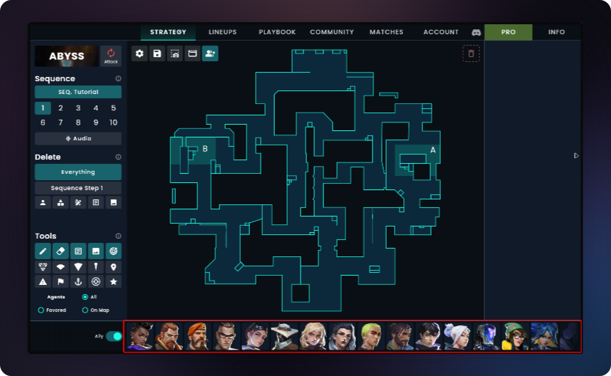
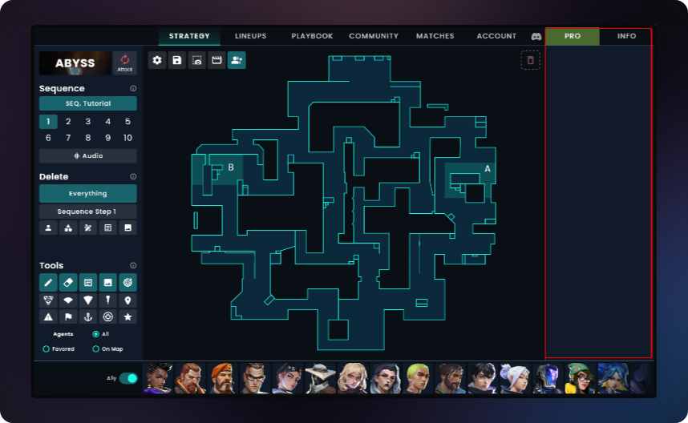
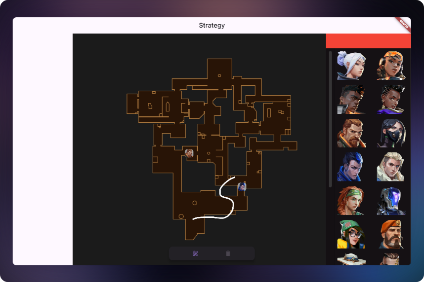

3… 2… 1…
I’ve been playing Valorant for 3 years… I’ve been hardstuck in platinum for 2 years… And I’ve been trying to get out for 1 year…
But alas, I don’t have enough time to actually focus and commit to improving. So within my free time, I did the next best thing: VOD reviews of pro-players using a tool called Valoplant.
The Good, The Bad, and The UI
Valoplant is a great tool - it allows you to create and analyze strategies while understanding the game from a technical perspective. You can create animation sequences for strategy visualization and even view your previous matches to see your positions at the beginning of each round. But it has its gripes.
Firstly, it’s freemium, which is a valid model considering it’s a website - things like ads and a premium tier are necessary for maintenance. However, the problems begin when basic features like saving strategies are locked behind a paid tier. This means free users have to resort to taking screenshots of their strategies to reference them later, and editing requires manually recreating everything from scratch. Not exactly ideal.
Another subtle pain point is the UI layout… it’s really impractical. The agent bar sits at the bottom of the screen, which might not seem like a problem until you realize that Valorant has 24 agents (and that number is only going to grow). Anyone would be confused by this design choice - why not make it vertical on the side of the screen? After all, most devices have more horizontal real estate than vertical.

Then you notice the reason: the right sidebar is dedicated entirely to ads. Now, I understand the need for monetization, and the bottom placement might be due to their ability-hover implementation. But still…

The cloud-only storage for strategies (requiring premium) is another interesting choice. I get it - cloud storage costs money, and it enables team sharing features. But what about individual users? Not being able to save and edit strategies locally means you can’t iterate on your plays without paying up. Most people I know who use Valoplant end up posting screenshots in Discord or Google Docs anyway, as it’s more accessible than navigating back to Valoplant. The free experience just has too many friction points.
The Solution - Icarus
A lot of Valoplant’s inconveniences for freemium users stem from it being a website. So the solution is simple: create Valoplant but offline, right? Well, yes technically, but websites do offer better accessibility in certain cases.
This got me thinking about the ideal platform for a strategy tool. What if we could combine the accessibility of a web app with the benefits of a native application? What if we could create something that works offline but still feels modern and responsive? And what if we could design it in a way that could potentially become a web app down the line if needed? The answer was staring me in the face the whole time.
I’ve been using Flutter to create apps and projects for a while now, riding a wave of uncompleted projects as I searched for issues I’m passionate enough about to see through to the end. Then this problem hit me - crossing Valorant with software engineering was such a no-brainer that I’m embarrassed it took me so long to notice.
So I decided to recreate Valoplant in Flutter… oh wait, I just realized that Valoplant is already a Flutter app… Never mind, I’ll be basically copying a Flutter app and making it better!! I code-named it Icarus as a joke because I definitely feel like I’m flying a little too close to the sun right now.
The Ground Rules
In creating Icarus, I’ve set some important principles:
-
Built From Scratch: No using assets developed by Valoplant in the release version. Why? I’m building this as a learning project, and copying Valoplant won’t help me improve. Everything must be done from scratch, including maps and assets (except for agent icons and certain ability icons from the game itself).
-
Focused Scope: Icarus isn’t meant to fully replace Valoplant. Valoplant is actually a great tool with many useful features for power users. Icarus will have a more focused scope, excluding features like collaboration, community sharing, and animation (though I might add this last one later if I’m feeling particularly ambitious).
-
Open Source: Icarus will be open-source for all to view - yes, for ALL to view. This is a little tough for me as I’m not really sure of the eventual scope of the project. But for now, it will be open for all to see, warts and all.
-
Development Journey: I will TRY to document its progress as I’m developing it. Notice the emphasis on “try” - no promises, but I’ll do my best to share the journey, including the inevitable face-palm moments and victories.
Why Flutter?
“Why Flutter?” you might ask. Well, the answer is beautifully simple: it’s what I’m most familiar with, and it’s the best tool for the matter. Flutter allows me to develop for various platforms easily without worrying too much about compatibility. Sometimes the best technical decision is the one that lets you actually finish the project!
How I Learned to Stop Worrying and Love the Stack(Technical Preview)
Let me give you a peek under the hood of what I’m building. The main plan is to use an SVG background for the map, then layer it with a stack containing a custom painter and a drag target. All of these elements will have local and normalized positions so items remain consistent when scaling the screen.
Sounds simple, right? Well, this seemingly straightforward approach took me a week to figure out just the scaling issues. And you want to know the best part? All that time spent debugging, all those hours staring at my screen and questioning my life choices… it came down to padding. Yes, padding on the SVG. And another time, it was because I didn’t add a LayoutBuilder to the DragTarget, so it was incorrectly assessing its size. I was literally going insane trying to figure out why my perfectly reasonable code was acting like it was written by a caffeinated raccoon.
Speaking of things that make me question my sanity, I’m still wrestling with my custom painter’s dynamic lines - they’re not quite as smooth as I want them to be. It’s like trying to draw perfect circles in MS Paint, except with more math and less childhood nostalgia.
Then there’s the eternal question of data storage - how will I save these strategies? Should I go with a simple JSON file, or should I create a custom file format that would make it easier for users to open files directly with the app? Decisions, decisions…
The UI is another beast entirely. I have a rough mockup of where everything should be, but I’m facing a classic developer’s dilemma: either hire a freelancer (as I’ve done with my other apps) or have graphic design be my new “passion.” We’ll see which wins out!
On the bright side, I’ve already completed the basic drawing functionality and player placement on the strategy board, including all that fun scaling stuff. Currently, I’m working on implementing abilities, which will complete the most basic functionality. Here’s a snippet of what the main board layout looks like:

Widget build(BuildContext context) {
Size playAreaSize = Size(height * 1.2, height);
AgentProvider agentProvider = context.watch<AgentProvider>();
CoordinateSystem coordinateSystem = CoordinateSystem(playAreaSize: playAreaSize);
return Row(
children: [
Container(
child: InteractiveViewer(
child: Stack(
children: [
// Background Map Layer
Positioned.fill(
child: SvgPicture.asset(assetName),
),
// Interactive Drawing Layer
Positioned.fill(
child: InteractivePainter(playAreaSize: playAreaSize),
),
// Drag & Drop Layer for Agents
Positioned.fill(
child: LayoutBuilder(
builder: (context, constraints) {
return DragTarget<AgentData>(
builder: (context, *, *_) {
return Stack(
children: [
// Placed Agents
...List.generate(
agentProvider.placedAgents.length,
(index) => Positioned(
child: draggableAgentWidget(
// Agent widget with drag functionality
),
),
),
],
);
},
);
},
),
),
],
),
),
),
],
);
}
What’s Next?
So here we are - me with a partially working project, a list of TODOs that keeps growing faster than Valorant’s agent roster, and an unreasonable amount of excitement about coordinate systems. If you’re interested in watching me either succeed gloriously or crash and burn (hey, it’s called Icarus for a reason), you can follow along in a few ways:
Keep an eye out for my next article where I’ll do a technical deep-dive into all the mathematical gymnastics and Flutter wizardry that goes into making this work. We’re talking coordinate systems, scaling nightmares, and probably a few more padding-related existential crises.
I’m planning to document some of the development process on YouTube, where you can watch me discover exciting new ways to misuse Flutter in real-time. Subscribe to Sunken In Tech(I need to come up with a better name for that) to catch those videos - they’ll be equal parts educational and entertaining, even if sometimes unintentionally.
Check out the project on GitHub at https://github.com/SunkenInTime/icarus if you want to see the code evolve from “it works on my machine” to “it works on everyone’s machine (hopefully).”
Whether you’re a Valorant player tired of screenshot strategies, a Flutter developer curious about custom painters, or just someone who enjoys watching others solve problems they created for themselves - there’s something here for you. Stay tuned!
Remember: like my Valorant rank, this project can only go up from here… right?